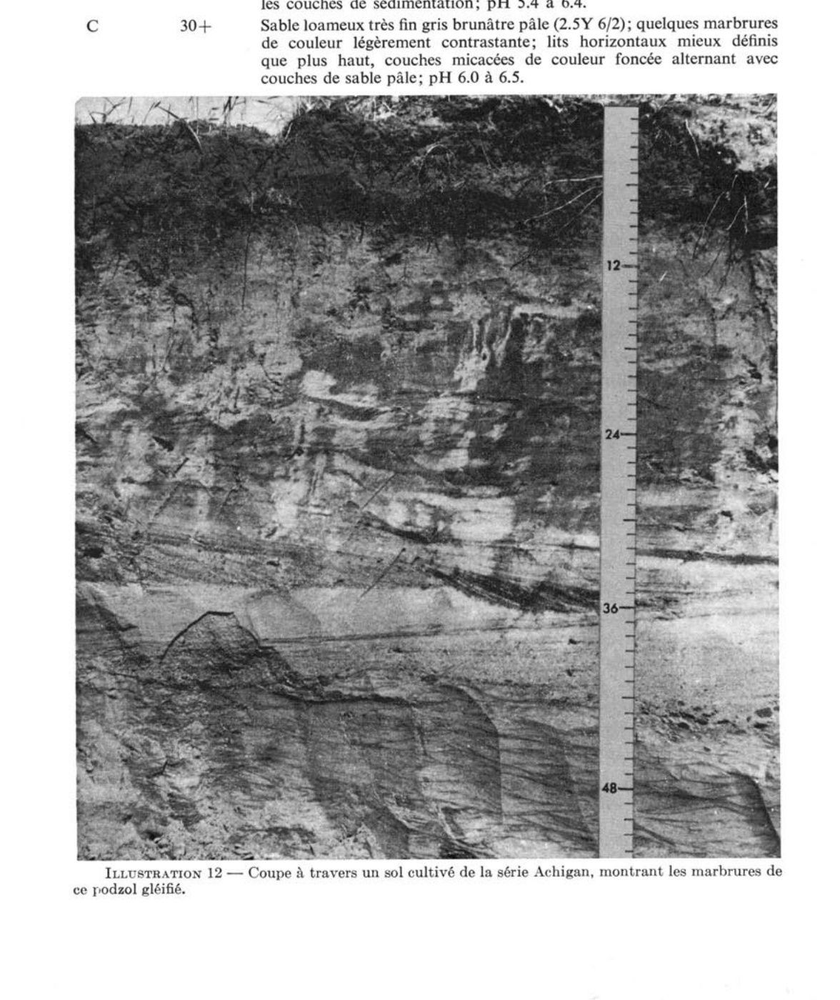

Identification & Caractéristiques Générales
Le matériau originel de la série Achigan est constitué d'alluvions sableuses, principalement composées de sables fins et très fins, d'une épaisseur variant généralement de 3 à 8 pieds, reposant en discontinuité lithologique sur des dépôts argileux d'origine marine (mer de Champlain) ou lacustre. Ces dépôts s'étendent sur des morphologies de plaine unie, de terrasses ou de topographies légèrement ondulées à planes, caractérisées par une absence presque totale de pierres en surface. Sur le plan géomorphologique, cette série s'inscrit souvent dans une caténa de sols juxtaposant des sédiments éoliens ou fluvioglaciaires plus drainés, et se rencontre à des altitudes s'échelonnant généralement entre 75 et 400 pieds.
Le profil pédologique se caractérise par une texture de surface variant du sable très fin au loam sableux, un solum très perméable en surface mais reposant sur un substratum argileux imperméable. Le drainage naturel est imparfait (lent), entraînant l'accumulation saisonnière d'eau au-dessus de l'argile et la formation de mouchetures redoximorphiques (gleyification) dans les horizons inférieurs. La réaction du sol est fortement acide, avec des valeurs de pH mesurées entre 4,9 et 5,9 dans l'horizon de surface cultivé. La teneur en matière organique est globalement satisfaisante, bien que le sol présente à l'état naturel de faibles réserves en éléments nutritifs majeurs.
Les aptitudes agronomiques de la série Achigan sont limitées par l'acidité, la faible fertilité naturelle et l'engorgement hydrique temporaire, mais la productivité peut être considérablement augmentée par des pratiques de gestion appropriées. L'installation d'un réseau de drainage souterrain adéquat, ciblant l'évacuation rapide des surplus d'eau du solum sans altérer excessivement la nappe du matériau originel, est un prérequis indispensable. La mise en valeur agricole requiert également des apports réguliers de amendements calciques (chaulage) pour corriger le pH, ainsi que la fertilisation minérale et organique pour soutenir les cultures maraîchères spécialisées (telles que la pomme de terre et les petits fruits), les grandes cultures ou les productions fourragères.
Caractères Distinctifs & Morphologie Génétique (Comté de Dorchester — Page 65)
- Topographie : horizontale à légèrement déprimée
- Drainage : imparfait
- Pierrosité : nulle — 0
Classification Taxonomique & Environnement Pédologique
| Ordre Pédologique | Podzolique |
|---|---|
| Grand Groupe (SCSS) | Podzol humique |
| Sous-Groupe Taxonomique | Podzol humique orthique |
| Famille Pédologique | Sableuse, mixte sableux, acide |
| Mode de Dépôt Parental | Fluviatile |
| Classe de Drainage Naturel | Imparfaitement drainé |
| Régime Thermique & Humidité | Doux / Humide |
Description Morphologique du Profil Type
Séquences génétiques des horizons pédologiques caractérisant le profil type représentatif de la série Achigan :
Profil naturel (vierge) — Comté de Champlain
✓ Source : Comté de Champlain — Page 46Couleur Munsell : 2.5Y 2/0
Structure & Consistance : Polyédrique à granulaire
Description morphologique : Débris de végétaux mêlés à un sable humifère noir (2.5Y 2/0); pH : 3.6.
Couleur Munsell : 7.5YR 7/2
Structure & Consistance : Polyédrique à granulaire
Description morphologique : Sable fin gris rose (7.5YR 7/2); épaisseur variable se présente souvent en poches; pH : 4.0.
Couleur Munsell : 5YR 3/2, 2.5Y 7/4
Structure & Consistance : Polyédrique à granulaire
Description morphologique : Sable fin brun rouge foncé (5YR 3/2); taches de rouille jaune pâle (2.5Y 7/4); présence de concrétions fondues en banc massif; pH : 4.6.
Couleur Munsell : 5Y 5/2 (matrice), 5YR 5/2 (marbrures)
Structure & Consistance : Polyédrique à granulaire
Description morphologique : Sable fin gris olive (5Y 5/2); avec plaques rouillées ou marbrures brun rouge (5YR 5/2); lits entrecroisés de sables; présence de mica; pH : 4.7.
Couleur Munsell : 2.5Y 5/2
Structure & Consistance : Polyédrique à granulaire
Description morphologique : Sable fin brun gris (2.5Y 5/2); intercalation de strates jaunes, parfois limoneuses de 8 à 10 pouces d'épaisseur; pH : 5.2.
Profil forestier / boisé — Comté de Dorchester
✓ Source : Comté de Dorchester — Page 66Couleur Munsell : Non précisée
Structure & Consistance : Polyédrique à granulaire
Description morphologique : Humus brun très foncé; pH: 4.1.
Couleur Munsell : 10YR 5/2, 5Y 7/1
Structure & Consistance : Polyédrique à granulaire
Description morphologique : Sable loameux brun-gris (10YR 5/2) à gris clair (5Y 7/1); sans structure; friable; pH: 4.3.
Couleur Munsell : 5YR 2/2 (matrice), 2.5YR 5/4 (marbrures)
Structure & Consistance : Faiblement granulaire
Description morphologique : Sable loameux brun-rouge foncé (5YR 2/2) à brun-rouge (2.5YR 5/4) avec mouchetures de couleur brun clair (7.5YR 6/4); structure faiblement granulaire; friable; pH: 4.3.
Couleur Munsell : 10YR 4/4, 5YR 3/2
Structure & Consistance : Polyédrique à granulaire
Description morphologique : Sable loameux brun-jaune foncé (10YR 4/4) avec taches et rayures de couleur brun-rouge foncé (5YR 3/2); sans structure; friable; pH: 4.5.
Couleur Munsell : 10YR 5/4
Structure & Consistance : Polyédrique à granulaire
Description morphologique : Sable loameux brun-jaune (10YR 5/4) légèrement marbré; beaucoup de mica déposé en lits horizontaux; ferme; pH: 5.1.
Profil représentatif — Comté de Argenteuil
✓ Source : Comté de Argenteuil — Page 73Couleur Munsell : Non précisée
Structure & Consistance : Polyédrique à granulaire
Description morphologique : Tapis brun foncé de racines et de feuilles décomposées.
Couleur Munsell : Non précisée
Structure & Consistance : Polyédrique à granulaire
Description morphologique : Humus acide noir, assez bien décomposé.
Couleur Munsell : Non précisée
Structure & Consistance : Polyédrique à granulaire
Description morphologique : Sable fin limoneux délavé gris clair; ne se voit généralement pas dans les champs cultivés, sauf en poches isolées; pH 5.0-5.5.
Couleur Munsell : Non précisée
Structure & Consistance : Polyédrique à granulaire
Description morphologique : Sable fin brun rougeâtre tacheté faiblement de stries brun jaunâtre; la formation orstein n'est pas très rarement observée; friable et sans structure; pH 5.4-6.0.
Couleur Munsell : Non précisée
Structure & Consistance : Polyédrique à granulaire
Description morphologique : Sable fin ou très fin brun jaunâtre clair; tacheré de rouille et de gris; sédiments à peine visibles; pH 5.6-6.2.
Couleur Munsell : Non précisée
Structure & Consistance : Polyédrique à granulaire
Description morphologique : Sable fin ou très fin gris brunâtre clair ou jaune pâle, avec des plages et des stries de couleur ocre; plutôt ferme par endroit mais se brisant facilement en grains simples lorsqu'on le dégage; fines particules de mica très abondantes; changement très graduel de couleurs dans la partie inférieure du profil; pH 5.8-6.2.
Couleur Munsell : Non précisée
Structure & Consistance : Polyédrique à granulaire
Description morphologique : Sable fin à très fin gris clair; légèrement tacheté; contenant beaucoup de mica; sédiments de 1 à 2 mm. d'épaisseur dont la couleur alterne de pâle à foncé; pH 6.0-6.5.
Profil naturel (vierge) — Comté de Gatineau
✓ Source : Comté de Gatineau — Page 65Couleur Munsell : Non précisée
Structure & Consistance : Polyédrique à granulaire
Description morphologique : Humus noir à brun très foncé; pH 4.5 à 5.0.
Couleur Munsell : Non précisée
Structure & Consistance : Polyédrique à granulaire
Description morphologique : Fin sable loameux, éluivé, gris pâle; pH 5.0 à 5.5.
Couleur Munsell : Non précisée
Structure & Consistance : Monogranulaire
Description morphologique : Sable fin brun rougeâtre; faibles marbrures de brun jaunâtre; structure monogranulaire; formation d'ortstein très rare; friable et perméable; pH 5.4 à 6.0.
Couleur Munsell : Non précisée
Structure & Consistance : Polyédrique à granulaire
Description morphologique : Sable fin à très fin brun jaunâtre; marbrures de brun vif et de gris jaunâtre pâle; texture uniforme avec quantité variable de mica déposé horizontalement et formant des bandes foncées; pH 5.6 à 6.2.
Couleur Munsell : Non précisée
Structure & Consistance : Polyédrique à granulaire
Description morphologique : Sable fin ou très fin, brun jaunâtre pâle ou jaune brunâtre; taches et raies brun vif; le matériel en place est ferme mais il se brise facilement en grains de sable individuels une fois séparé de la masse; nombreuses particules de mica; changement très graduel des couleurs dans la partie inférieure du profil; pH 5.8 à 6.2.
Couleur Munsell : Non précisée
Structure & Consistance : Polyédrique à granulaire
Description morphologique : Sable fin à très fin, gris brunâtre pâle; légèrement marbré; beaucoup de mica déposé en lits horizontaux, de 1 à 2 millimètres d'épaisseur, alternativement de couleur pâle et foncée; pH 6.0 à 6.5.
Profil naturel (vierge) — Comté de Hull
✓ Source : Comté de Hull — Page 73Couleur Munsell : Non précisée
Structure & Consistance : Polyédrique à granulaire
Description morphologique : Humus noir à brun très foncé; pH 4.5 à 5.0.
Couleur Munsell : Non précisée
Structure & Consistance : Polyédrique à granulaire
Description morphologique : Fin sable loameux, éluvié, gris pâle; pH 5.0 à 5.5.
Couleur Munsell : Non précisée
Structure & Consistance : Monogranulaire
Description morphologique : Sable fin, brun rougeâtre; faibles marbrures de brun jaunâtre; structure monogranulaire; friable et perméable; pH 5.4 à 6.0.
Couleur Munsell : Non précisée
Structure & Consistance : Polyédrique à granulaire
Description morphologique : Sable fin à très fin, brun jaunâtre; marbrures de brun vif et de gris jaunâtre pâle; texture uniforme avec quantité variable de mica déposé horizontalement et formant des bandes foncées; pH 5.6 à 6.2.
Couleur Munsell : Non précisée
Structure & Consistance : Polyédrique à granulaire
Description morphologique : Sable fin ou très fin, brun jaunâtre ou jaune brunâtre; taches et raies brun vif; le matériel en est ferme mais il se brise facilement en grains de sable individuels une fois séparé de la masse; nombreuses particules de mica; changement très graduel des couleurs dans la partie inférieure du profil; pH 5.8 à 6.2.
Couleur Munsell : Non précisée
Structure & Consistance : Polyédrique à granulaire
Description morphologique : Sable fin à très fin, gris brunâtre pâle; légèrement marbré; beaucoup de mica déposé en lits horizontaux, de 1 à 2 millimètres d'épaisseur, alternativement de couleur pâle et foncée; pH 6.0 à 6.5.
Profil naturel (vierge) — Comté de Joliette
✓ Source : Comté de Joliette — Page 55Couleur Munsell : Non précisée
Structure & Consistance : Polyédrique à granulaire
Description morphologique : Débris de feuilles non décomposées.
Couleur Munsell : 5YR 2/1
Structure & Consistance : Polyédrique à granulaire
Description morphologique : Loam sableux, sans structure, noir (5YR 2/1), meuble, pH: 5.0.
Couleur Munsell : 2.5Y 8/2
Structure & Consistance : Polyédrique à granulaire
Description morphologique : Loam sableux, sans structure, blanc (2.5Y 8/2), ferme, pH: 4.7.
Couleur Munsell : 2.5YR 3/6, 2.5Y 6/6
Structure & Consistance : Polyédrique à granulaire
Description morphologique : Sable fin, sans structure, noir rouge (2.5YR 3/6) avec taches jaune olive (2.5Y 6/6), ferme. pH: 5.8.
Couleur Munsell : 5YR 3/4, 10YR 6/8, 2.5Y 5/6, 5Y 6/3
Structure & Consistance : Polyédrique à granulaire
Description morphologique : Sable fin, sans structure, brun rouge foncé (5YR 3/4) à jaune brun (10YR 6/8) avec taches olive clair (2.5Y 5/6) à olive pâle (5Y 6/3), ferme. pH: 6.0.
Couleur Munsell : 2.5Y 6/6, 5Y 6/3
Structure & Consistance : Polyédrique à granulaire
Description morphologique : Loam sableux, sans structure, jaune olive (2.5Y 6/6) à olive pâle (5Y 6/3), ferme. pH: 7.0.
Profil naturel (vierge) — Comté de Joliette — Phase mince
✓ Source : Comté de Joliette — Page 57Couleur Munsell : 5Y 6/2
Structure & Consistance : Polyédrique à granulaire
Description morphologique : Loam sableux, sans structure, olive clair (5Y 6/2), meuble. pH: 5.1.
Couleur Munsell : 5Y 6/2, 5YR 4/8
Structure & Consistance : Polyédrique à granulaire
Description morphologique : Loam sableux, sans structure, olive clair (5Y 6/2) avec traînées rouge jaune (5YR 4/8), consistance ferme. pH: 5.3.
Couleur Munsell : 5Y 6/4, 10YR 5/8
Structure & Consistance : Lamellaire
Description morphologique : Loam sableux, structure lamellaire, olive pâle (5Y 6/4) avec traînées brun jaune (10YR 5/8), consistance ferme. pH: 5.5.
Couleur Munsell : 5Y 6/2
Structure & Consistance : Massive
Description morphologique : Argile, structure massive, gris olive clair (5Y 6/2), consistance très plastique. pH: 5.8.
Profil cultivé (agricole) — Comté de L'assomption
✓ Source : Comté de L'assomption — Page 62Couleur Munsell : 10YR 3/2
Structure & Consistance : Monogranulaire et quelques agrégats granuleux très fins
Description morphologique : Loam sableux à sable loameux très fin, brun grisâtre foncé ou très foncé (10YR 3/2-4/2); structure monogranulaire et quelques agrégats granuleux très fins; très friable et très perméable; pH 5.0 à 5.9.
Couleur Munsell : 10YR 5/6, 2.5Y 6/4, 2.5Y 7/4
Structure & Consistance : Polyédrique à granulaire
Description morphologique : Sable loameux très fin à loam sableux brun jaunâtre ou brun jaunâtre pâle (10YR 5/6-2.5Y 6/4); taches de gley jaune pâle et gris pâle (2.5Y 7/4-7/2); monogranulaire; perméable.
Couleur Munsell : 2.5Y 5/6 (matrice), 10YR 5/6 (marbrures)
Structure & Consistance : Polyédrique à granulaire
Description morphologique : Sable loameux très fin à loam sableux olive pâle, brun jaunâtre, brun jaunâtre pâle et gris pâle (2.5Y 5/6-6/4 et 10YR 5/6-6/4); les diverses couleurs se présentent sous forme de marbrures ou de taches; minces lits horizontaux apparemment dus à diverses proportions de mica dans les couches de sédimentation; pH 5.4 à 6.4.
Couleur Munsell : 2.5Y 6/2
Structure & Consistance : Polyédrique à granulaire
Description morphologique : Sable loameux très fin gris brunâtre pâle (2.5Y 6/2); quelques marbrures de couleur légèrement contrastante; lits horizontaux mieux définis que plus haut, couches micacées de couleur foncé alternant avec couches de sable pâle; pH 6.0 à 6.5.
Profil représentatif — Comté de Maskinongé
✓ Source : Comté de Maskinongé — Page 36Couleur Munsell : 5YR 3/2
Structure & Consistance : Granulaire
Description morphologique : Loam sableux brun rouge foncé (5YR 3/2), structure granulaire, pH : 5.3.
Couleur Munsell : Non précisée
Structure & Consistance : Polyédrique à granulaire
Description morphologique : Sable gris rose. Souvent absent.
Couleur Munsell : 2.5Y 6/2
Structure & Consistance : Polyédrique à granulaire
Description morphologique : Sable loameux gris brun clair (2.5Y 6/2) barriolé de gley et mouchetures de rouille, sans structure. pH : 5.2.
Couleur Munsell : 2.5Y 6/2
Structure & Consistance : Polyédrique à granulaire
Description morphologique : Sable gris brun clair (2.5Y 6/2), beaucoup de mouchetures de rouille, sans structure, pH : 5.5.
Couleur Munsell : 10YR 7/2
Structure & Consistance : Polyédrique à granulaire
Description morphologique : Sable gris clair (10YR 7/2), grandes taches de rouille. pH : 5.6.
Profil cultivé (agricole) — Comté de Portneuf
✓ Source : Comté de Portneuf — Page 73Couleur Munsell : 7.5YR 3/2, 10YR 5/2
Structure & Consistance : Polyédrique à granulaire
Description morphologique : Sable fin loameux brun foncé (7.5YR 3/2 h), brun-gris (10YR 5/2 s) ; particulaire ; très friable ; racines abondantes, fines à microscopiques, non-orientées, exo-agrégats ; limite abrupte, régulière ; pH : 5.0.
Couleur Munsell : 7.5YR 6/2
Structure & Consistance : Polyédrique à granulaire
Description morphologique : Sable fin loameux gris rose (7.5YR 6/2 h, 7/2 s) ; taches peu nombreuses, petites, faibles ; particulaire ; très friable ; racines abondantes, fines à microscopiques, non-orientées, exo-agrégats ; limite abrupte, interrompue ; pH : 5.1.
Couleur Munsell : 2.5YR 3/4, 7.5YR 4/4
Structure & Consistance : Polyédrique à granulaire
Description morphologique : Sable fin loameux brun-rouge foncé (2.5YR 3/4 h), brun foncé (7.5YR 4/4 s) ; taches peu nombreuses, petites, faibles ; particulaire ; très friable ; racines abondantes, très fines à microscopiques, verticales, exo-agrégats ; concrétions très abondantes, moyennes, obliques, dispersées dans la matrice ; limite distincte, ondulée ; pH : 4.8.
Couleur Munsell : 10YR 6/6, 10YR 7/4, 5YR 5/8
Structure & Consistance : Polyédrique à granulaire
Description morphologique : Sable jaune-brun (10YR 6/6 h), brun très pâle (10YR 7/4 s) ; taches rouge-jaune (5YR 5/8 h) nombreuses, grossières, très marquées ; particulaire ; très friable ; racines peu abondantes, microscopiques, verticales, exo-agrégats ; limite graduelle, ondulée ; pH : 5.2.
Couleur Munsell : 5Y 7/1, 5YR 5/8, 5Y 5/2
Structure & Consistance : Polyédrique à granulaire
Description morphologique : Sable fin gris-olive à gris-olive clair (5Y 5/2 à 6/2 h), gris clair (5Y 7/1 s) ; taches rouge-jaune (5YR 5/8 h) assez nombreuses, moyennes, distinctes ; particulaire ; très friable ; pH : 5.5.
Profil cultivé (agricole) — Comté de Portneuf
✓ Source : Comté de Portneuf — Page 74Couleur Munsell : 10YR 2/2, 10YR 4/3
Structure & Consistance : Polyédrique à granulaire
Description morphologique : Loam sableux fin brun très foncé (10YR 2/2 h), brun foncé (10YR 4/3 s) ; particulaire ; très friable ; racines très abondantes, fines à microscopiques, non-orientées, exo-agrégats ; limite abrupte, régulière ; pH : 5.5.
Couleur Munsell : 10YR 6/1, 10YR 7/1
Structure & Consistance : Polyédrique à granulaire
Description morphologique : Sable loameux gris (10YR 6/1 h), gris clair (10YR 7/1 s) ; légèrement teinté par l'humus ; particulaire ; très friable ; racines abondantes, fines à microscopiques, non-orientées, exo-agrégats ; limite abrupte, régulière ; pH : 5.9.
Couleur Munsell : 5YR 2/1, 5YR 4/4
Structure & Consistance : Polyédrique à granulaire
Description morphologique : Loam sableux fin noir (5YR 2/1 h), brun-rouge (5YR 4/4 s) ; particulaire ; très friable ; racines abondantes, fines à microscopiques, non-orientées, exo-agrégats ; limite graduelle, ondulée ; pH : 5.3.
Couleur Munsell : 10YR 6/6, 10YR 7/4, 5YR 5/8
Structure & Consistance : Polyédrique à granulaire
Description morphologique : Loam sableux fin jaune-brun (10YR 6/6 h), brun très pâle (10YR 7/4 s) ; taches rouge-jaune (5YR 5/8 h) nombreuses, moyennes, très marquées ; particulaire ; très friable ; racines peu abondantes, très fines à microscopiques, verticales, exo-agrégats ; limite graduelle, ondulée ; pH : 6.7.
Couleur Munsell : 2.5Y 5/2, 2.5Y 7/4, 7.5YR 5/6
Structure & Consistance : Polyédrique à granulaire
Description morphologique : Loam sableux brun-gris (2.5Y 5/2 h), jaune pâle (2.5Y 7/4 s) ; taches brun vif (7.5YR 5/6 h) nombreuses, moyennes, très marquées ; particulaire ; friable ; racines très peu abondantes, microscopiques, verticales, exo-agrégats ; pH : 7.0.
Profil forestier / boisé — Comté de Trois-rivières
✓ Source : Comté de Trois-rivières — Page 36Couleur Munsell : Non précisée
Structure & Consistance : Polyédrique à granulaire
Description morphologique : Débris de plantes mélangés à un loam sableux humifère noir.
Couleur Munsell : 10YR 5/1
Structure & Consistance : Polyédrique à granulaire
Description morphologique : Loam sableux, sans structure, gris (10YR 5/1), meuble; pH : 5.0.
Couleur Munsell : 5YR 3/4, 2.5Y 6/2
Structure & Consistance : Polyédrique à granulaire
Description morphologique : Loam sableux, sans structure, brun rouge foncé (5YR 3/4) avec taches de gley de couleur gris brun clair (2.5Y 6/2), ferme; pH : 5.3.
Couleur Munsell : 10YR 4/4, 5Y 6/2
Structure & Consistance : Polyédrique à granulaire
Description morphologique : Loam sableux, sans structure, brun jaune foncé (10YR 4/4) avec taches de gley de couleur gris olive clair (5Y 6/2), ferme; pH : 5.5.
Couleur Munsell : 10YR 7/2, 2.5Y 4/4
Structure & Consistance : Polyédrique à granulaire
Description morphologique : Sable fin, sans structure, gris clair (10YR 7/2) avec taches de gley de couleur olive (2.5Y 4/4), ferme; pH : 5.8.
Profil forestier (sous boisé) — Comté de Verchères
✓ Source : Comté de Verchères — Page 19Couleur Munsell : Non précisée
Structure & Consistance : Polyédrique à granulaire
Description morphologique : Litière et matériau organique constitués d'aiguilles, de feuilles, de brindilles et de sphaignes, peu décomposés; racines très nombreuses, fines à grosses, horizontales; limite nette, ondulée; réaction extrêmement acide.
Couleur Munsell : 10YR 2/1
Structure & Consistance : Granulaire
Description morphologique : Loam sableux fin; noir (10YR 2/1); structure granulaire, moyenne, assez développée; consistance très friable; assez poreux; racines très nombreuses, fines à grosses, horizontales; limite nette, ondulée; réaction extrêmement acide.
Couleur Munsell : 2.5Y 6.5/2
Structure & Consistance : Polyédrique à granulaire
Description morphologique : Sable fin; gris brunâtre clair à gris clair (2.5Y 6.5/2); massif; consistance meuble; peu poreux; racines très nombreuses, fines à grosses, horizontales; limite nette, ondulée; réaction extrêmement acide.
Couleur Munsell : 5YR 3/3, 2.5YR 3/2
Structure & Consistance : Granulaire
Description morphologique : Sable fin; brun rougeâtre foncé (5YR 3/3) à rouge sombre (2.5YR 3/2); massif se fragmentant en structure granulaire, fine, peu développée; consistance ferme à très ferme; peu poreux; présence de concrétions de fer de façon discontinue; racines assez nombreuses, fines et moyennes, horizontales; limite graduelle, ondulée; réaction très fortement acide.
Couleur Munsell : 2.5Y 5/3 (matrice), 7.5YR 4/6 (marbrures)
Structure & Consistance : Polyédrique à granulaire
Description morphologique : Sable fin; brun grisâtre à brun olivâtre clair (2.5Y 5/3); mouchetures brun vif (7.5YR 4/6) et brun jaunâtre foncé (10YR 4/6), très nombreuses, moyennes, très contrastées; massif; consistance meuble; peu poreux; limite graduelle, ondulée; réaction fortement acide.
Couleur Munsell : 2.5Y 5/2 (matrice), 10YR 4/6 (marbrures)
Structure & Consistance : Polyédrique à granulaire
Description morphologique : Sable fin; brun grisâtre (2.5Y 5/2); mouchetures brun jaunâtre foncé (10YR 4/6), très nombreuses, moyennes, très contrastées; massif; consistance meuble; peu poreux; réaction fortement acide.
Profil cultivé (agricole) — Comté de Verchères
✓ Source : Comté de Verchères — Page 21Couleur Munsell : 10YR 3/2
Structure & Consistance : Granulaire
Description morphologique : Loam sableux fin; brun grisâtre très foncé (10YR 3/2); structure granulaire, moyenne, assez développée; consistance très friable; très poreux; limite nette, onduloire; réaction fortement acide.
Couleur Munsell : 10YR 5/3 (matrice), 10YR 4/6 (marbrures)
Structure & Consistance : Polyédrique à granulaire
Description morphologique : Sable fin; brun (10YR 5/3); mouchetures brun jaunâtre foncé (10YR 4/6), très nombreuses, grandes, très contrastées; particulaire; consistance meuble; très poreux; limite abrupte, régulière; réaction moyennement acide.
Couleur Munsell : 5Y 6/2 (matrice), 10YR 4/6 (marbrures)
Structure & Consistance : Polyédrique à granulaire
Description morphologique : Sable fin; gris brunâtre clair (2,5Y 6/2); mouchetures brun jaunâtre foncé (10YR 4/6), peu nombreuses, fines, très contrastées; particulaire; consistance meuble; très poreux; limite abrupte, régulière; réaction moyennement acide.
Couleur Munsell : 5Y 5/3 (matrice), 10YR 4/6 (marbrures)
Structure & Consistance : Polyédrique subangulaire
Description morphologique : Argile lourde; olive (5Y 5/3); mouchetures brun jaunâtre foncé (10YR 4/6), très nombreuses, moyennes, très contrastées; structure polyédrique subangulaire, moyenne, peu développée; consistance friable; peu poreuse; limite abrupte, régulière; réaction faiblement acide.
Couleur Munsell : 5Y 5/2 (matrice), 10YR 5/6 (marbrures)
Structure & Consistance : Polyédrique à granulaire
Description morphologique : Argile lourde; gris olivâtre (5Y 5/2); mouchetures brun jaunâtre (10YR 5/6), très nombreuses, fines, très contrastées; massive; consistance ferme; peu poreuse; réaction neutre.
Profil cultivé (agricole) — Comté de Verchères — Variante calcaire
✓ Source : Comté de Verchères — Page 23Couleur Munsell : 10YR 3/1
Structure & Consistance : Polyédrique à granulaire
Description morphologique : Loam sableux; gris très foncé à brun grisâtre très foncé (10YR 3/1,5); massif; consistance friable; peu poreux; limite nette, ondulée; réaction moyennement acide.
Couleur Munsell : 5Y 5/2 (matrice), 10YR 4/6 (marbrures)
Structure & Consistance : Polyédrique à granulaire
Description morphologique : Sable brun grisâtre (2,5Y 5/2); mouchetures brun jaunâtre foncé (10YR 4/6), très nombreuses, moyennes, très contrastées; massif; consistance très friable; peu poreux; limite abrupte, régulière; réaction fortement acide.
Couleur Munsell : 5Y 4/1 (matrice), 5YR 4/6 (marbrures)
Structure & Consistance : Polyédrique à granulaire
Description morphologique : Argile limoneuse; gris foncé (5Y 4/1); mouchetures brun vif (7,5YR 4/6), très nombreuses, fines, très contrastées; massive; consistance ferme; peu poreuse; limite abrupte, régulière; réaction neutre.
Couleur Munsell : 5Y 4/2 (matrice), 10YR 4/6 (marbrures)
Structure & Consistance : Polyédrique à granulaire
Description morphologique : Argile limoneuse; gris olivâtre (5Y 4/2); mouchetures brun jaunâtre foncé (10YR 4/6), très nombreuses, fines, très contrastées; massive; consistance très collante; peu poreuse; effervescence forte; réaction faiblement alcaline.
Profil représentatif — Comté de Berthier
✓ Source : Comté de Berthier — Page 59Couleur Munsell : Non précisée
Structure & Consistance : Polyédrique à granulaire
Description morphologique : Débris de feuilles mortes partiellement décomposées. pH: 4.1.
Couleur Munsell : 5YR 3/3
Structure & Consistance : Polyédrique à granulaire
Description morphologique : Sable, brun rouge (5 YR 3/3) foncé, sans structure. pH: 4.2.
Couleur Munsell : Non précisée
Structure & Consistance : Polyédrique à granulaire
Description morphologique : Sable gris rose, n'existe parfois qu'à l'état de trace, mais pouvant parfois atteindre de 4 à 6" d'épaisseur. Se présente aussi en poches très irrégulières.
Couleur Munsell : 5YR 4/4
Structure & Consistance : Nuciforme
Description morphologique : Sable brun rouge (5 YR 4/4) "orterde" podzol humique, devenant dur lorsque sec On y rencontre parfois une structure nuciforme. pH: 4.9.
Couleur Munsell : 5YR 5/8
Structure & Consistance : Polyédrique à granulaire
Description morphologique : Sable rouge jaune (5 YR 5/8) contenant beaucoup de taches de gley, sans structure. pH: 5.2.
Couleur Munsell : 10YR 7/2
Structure & Consistance : Polyédrique à granulaire
Description morphologique : Sable gris clair (10 YR 7/2). pH: 5.5.
Profils Photographiques & Planches de Terrain
Documents iconographiques, figures pédologiques et coupes de terrain documentées dans les mémoires d'inventaire pour de la série Achigan :



Propriétés Physico-Chimiques & Analyses de Laboratoire
| Horizon | Prof. limite | pH (H₂O) | M.O. % | C tot. % | N tot. % | C.E.C. (cmol/kg) | Sable % | Limon % | Argile % | P Meh3 (mg/kg) | K (cmol/kg) | Ca (cmol/kg) | MVA (g/cm³) |
|---|---|---|---|---|---|---|---|---|---|---|---|---|---|
| Ap1 | 14.0 cm | 5.88 | 2.98 | 1.73 | 0.12 | 12.5 | 79.8 | 12.7 | 7.6 | 108.0 | 0.2 | 3.94 | 1.17 |
| Ap2 | 30.0 cm | 5.94 | 2.65 | 1.54 | 0.1 | 11.6 | 79.7 | 12.9 | 7.4 | 99.2 | 0.16 | 3.86 | 1.33 |
| B | — | 6.22 | 1.35 | 0.78 | 0.05 | 9.3 | 78.2 | 14.0 | 7.9 | 42.5 | 0.09 | 3.21 | 1.43 |
Particularités Régionales, Phases & Variantes Pédologiques
Déclinaisons régionales, faciès texturaux, phases d'érosion ou de pierrosité et variantes cartographiées par étude pour de la série Achigan :
| Étude Régionale | Symbole | Appellation / Phase / Variante | Différenciation avec la série type (Analyse pédologique) |
|---|---|---|---|
| Comté de Argenteuil | Ac |
Achigan sable très fin à sable limoneux | Modalité modale de référence (type de base de la série). |
| Comté de Berthier | Ac |
Achigan sable | Faciès textural de surface sable (distinct du limon de référence). |
| Comté de Champlain | Ac |
Achigan sable fin | Faciès textural de surface sable fin (distinct du limon de référence). |
| Comté de Dorchester | Ac |
Achigan sable loameux | Faciès textural de surface sable loameux (distinct du limon de référence). |
Ac-r |
Achigan sable loameux rocheux | Phase rocheuse avec affleurements limitant la profondeur utile; Faciès textural de surface sable loameux (distinct du limon de référence). | |
| Comté de Gatineau | Ac |
Achigan sable très fin | Faciès textural de surface sable (distinct du limon de référence). |
Acf |
Achigan sable loameux très fin | Faciès textural de surface sable loameux (distinct du limon de référence). | |
| Comté de Hull | Ac |
Achigan sable très fin | Faciès textural de surface sable (distinct du limon de référence). |
| Comté de Joliette | Ac |
Achigan sable | Faciès textural de surface sable (distinct du limon de référence). |
Ac-m |
Achigan sable phase mince | Phase mince sur substrat rocheux (< 50 cm); Faciès textural de surface sable (distinct du limon de référence). | |
| Comté de L'assomption | Ac |
Achigan sable loameux très fin | Faciès textural de surface sable loameux (distinct du limon de référence). |
Acf |
Achigan sable très fin à loam sableux | Faciès textural de surface loam sableux (distinct du limon de référence). | |
| Comté de Maskinongé | Ac |
Achigan loam sableux | Faciès textural de surface loam sableux (distinct du limon de référence). |
| Comté de Portneuf | Ac |
Achigan sable loameux fin à loam sableux fin | Faciès textural de surface loam sableux (distinct du limon de référence). |
| Comté de Richelieu | AC1 |
Achigan sable fin loameux- | Faciès textural de surface sable fin (distinct du limon de référence). |
| Comté de Trois-rivières | Ac |
Achigan loam sableux | Faciès textural de surface loam sableux (distinct du limon de référence). |
| Comté de Verchères | AC1 |
Achigan sable fin loameux- | Faciès textural de surface sable fin (distinct du limon de référence). |
SB4 |
Saint-Blaise loam limono-argileux | Faciès textural de surface argile (distinct du limon de référence); Drainage mal drainé (distinct du drainage de référence imparfaitement drainé); Sous-groupe gleyifié marqué par l'engorgement périodique (horizon Bgj). | |
SB5 |
Saint-Blaise argile limoneuse | Faciès textural de surface argile limoneuse (distinct du limon de référence); Drainage mal drainé (distinct du drainage de référence imparfaitement drainé); Sous-groupe gleyifié marqué par l'engorgement périodique (horizon Bgj). | |
SB5m |
Saint-Blaise argile limoneuse mince | Phase mince sur substrat rocheux (< 50 cm); Faciès textural de surface argile limoneuse (distinct du limon de référence); Drainage mal drainé (distinct du drainage de référence imparfaitement drainé); Sous-groupe gleyifié marqué par l'engorgement périodique (horizon Bgj). | |
| Comté de Chambly | SB3 |
Saint-Blaise loam | Faciès textural de surface loam (distinct du limon de référence); Drainage mal drainé (distinct du drainage de référence imparfaitement drainé); Sous-groupe gleyifié marqué par l'engorgement périodique (horizon Bgj). |
SB3h |
Saint-Blaise loam humifère | Phase humifère enrichie en matière organique superficielle; Faciès textural de surface loam (distinct du limon de référence); Drainage mal drainé (distinct du drainage de référence imparfaitement drainé); Sous-groupe gleyifié marqué par l'engorgement périodique (horizon Bgj). | |
SB4 |
Saint-Blaise loam limono-argileux | Faciès textural de surface argile (distinct du limon de référence); Drainage mal drainé (distinct du drainage de référence imparfaitement drainé); Sous-groupe gleyifié marqué par l'engorgement périodique (horizon Bgj). | |
SB4b |
Saint-Blaise loam limono-argileux 3-8 % de pente | Faciès textural de surface argile (distinct du limon de référence); Drainage mal drainé (distinct du drainage de référence imparfaitement drainé); Sous-groupe gleyifié marqué par l'engorgement périodique (horizon Bgj). | |
SB4m |
Saint-Blaise loam limono-argileux mince | Phase mince sur substrat rocheux (< 50 cm); Faciès textural de surface argile (distinct du limon de référence); Drainage mal drainé (distinct du drainage de référence imparfaitement drainé); Sous-groupe gleyifié marqué par l'engorgement périodique (horizon Bgj). | |
SB4p |
Saint-Blaise loam argileux pierreux | Phase pierreuse (abondance de cailloux et blocs en surface); Faciès textural de surface loam argileux (distinct du limon de référence); Drainage mal drainé (distinct du drainage de référence imparfaitement drainé); Sous-groupe gleyifié marqué par l'engorgement périodique (horizon Bgj). | |
SB5 |
Saint-Blaise argile limoneuse | Faciès textural de surface argile limoneuse (distinct du limon de référence); Drainage mal drainé (distinct du drainage de référence imparfaitement drainé); Sous-groupe gleyifié marqué par l'engorgement périodique (horizon Bgj). | |
SBa3 |
Saint-Blaise variante non calcaire loam | Variante décarbonatée (non calcaire) à réaction plus acide; Faciès textural de surface loam (distinct du limon de référence); Drainage mal drainé (distinct du drainage de référence imparfaitement drainé); Sous-groupe gleyifié marqué par l'engorgement périodique (horizon Bgj). | |
SBa4 |
Saint-Blaise variante non calcaire loam limono-argileux | Variante décarbonatée (non calcaire) à réaction plus acide; Faciès textural de surface argile (distinct du limon de référence); Drainage mal drainé (distinct du drainage de référence imparfaitement drainé); Sous-groupe gleyifié marqué par l'engorgement périodique (horizon Bgj). | |
| Comté de Châteauguay | B |
Saint-Blaise loam argileux | Faciès textural de surface loam argileux (distinct du limon de référence); Drainage mal drainé (distinct du drainage de référence imparfaitement drainé); Sous-groupe gleyifié marqué par l'engorgement périodique (horizon Bgj). |
| Comté de Iberville | SB |
Saint-Blaise argileux sur till loameux fin alcalin | Phase peu profonde sur till; Faciès textural de surface argile (distinct du limon de référence); Drainage mal drainé (distinct du drainage de référence imparfaitement drainé); Sous-groupe gleyifié marqué par l'engorgement périodique (horizon Bgj). |
| Comté de Laprairie | SB3 |
Saint-Blaise loam | Faciès textural de surface loam (distinct du limon de référence); Drainage mal drainé (distinct du drainage de référence imparfaitement drainé); Sous-groupe gleyifié marqué par l'engorgement périodique (horizon Bgj). |
SB3h |
Saint-Blaise loam humifère | Phase humifère enrichie en matière organique superficielle; Faciès textural de surface loam (distinct du limon de référence); Drainage mal drainé (distinct du drainage de référence imparfaitement drainé); Sous-groupe gleyifié marqué par l'engorgement périodique (horizon Bgj). | |
SB3p |
Saint-Blaise loam légèrement à modérément pierreux | Phase légèrement à modérément pierreuse (obstruction mécanique modérée); Faciès textural de surface loam (distinct du limon de référence); Drainage mal drainé (distinct du drainage de référence imparfaitement drainé); Sous-groupe gleyifié marqué par l'engorgement périodique (horizon Bgj). | |
SB4 |
Saint-Blaise loam limono-argileux | Faciès textural de surface argile (distinct du limon de référence); Drainage mal drainé (distinct du drainage de référence imparfaitement drainé); Sous-groupe gleyifié marqué par l'engorgement périodique (horizon Bgj). | |
SB4p |
Saint-Blaise loam argileux légèrement à modérément pierreux | Phase légèrement à modérément pierreuse (obstruction mécanique modérée); Faciès textural de surface loam argileux (distinct du limon de référence); Drainage mal drainé (distinct du drainage de référence imparfaitement drainé); Sous-groupe gleyifié marqué par l'engorgement périodique (horizon Bgj). | |
SB5 |
Saint-Blaise argile limoneuse | Faciès textural de surface argile limoneuse (distinct du limon de référence); Drainage mal drainé (distinct du drainage de référence imparfaitement drainé); Sous-groupe gleyifié marqué par l'engorgement périodique (horizon Bgj). | |
| Les sols de l’Île de Montréal | Bl |
Saint-Blaise loam | Faciès textural de surface loam (distinct du limon de référence); Drainage mal drainé (distinct du drainage de référence imparfaitement drainé); Sous-groupe gleyifié marqué par l'engorgement périodique (horizon Bgj). |
Bl-a |
Saint-Blaise argile mince | Phase mince sur substrat rocheux (< 50 cm); Faciès textural de surface argile (distinct du limon de référence); Drainage mal drainé (distinct du drainage de référence imparfaitement drainé); Sous-groupe gleyifié marqué par l'engorgement périodique (horizon Bgj). | |
| Comté de Napierville | SB |
Saint-Blaise | Drainage mal drainé (distinct du drainage de référence imparfaitement drainé); Sous-groupe gleyifié marqué par l'engorgement périodique (horizon Bgj). |
SBh |
Saint-Blaise humifère | Phase humifère enrichie en matière organique superficielle; Drainage mal drainé (distinct du drainage de référence imparfaitement drainé); Sous-groupe gleyifié marqué par l'engorgement périodique (horizon Bgj). | |
| Comté de Rouville | SB3 |
Saint-Blaise loam | Faciès textural de surface loam (distinct du limon de référence); Drainage mal drainé (distinct du drainage de référence imparfaitement drainé); Sous-groupe gleyifié marqué par l'engorgement périodique (horizon Bgj). |
SB4 |
Saint-Blaise loam limono-argileux | Faciès textural de surface argile (distinct du limon de référence); Drainage mal drainé (distinct du drainage de référence imparfaitement drainé); Sous-groupe gleyifié marqué par l'engorgement périodique (horizon Bgj). | |
SB4p |
Saint-Blaise loam limono-argileux légèrement à modérément pierreux | Phase légèrement à modérément pierreuse (obstruction mécanique modérée); Faciès textural de surface argile (distinct du limon de référence); Drainage mal drainé (distinct du drainage de référence imparfaitement drainé); Sous-groupe gleyifié marqué par l'engorgement périodique (horizon Bgj). | |
| Comté de Saint-jean | SB |
Saint-Blaise loam | Faciès textural de surface loam (distinct du limon de référence); Drainage mal drainé (distinct du drainage de référence imparfaitement drainé); Sous-groupe gleyifié marqué par l'engorgement périodique (horizon Bgj). |
SBbp |
Saint-Blaise loam 3-8% de pente légèrement à modérément pierreux | Phase légèrement à modérément pierreuse (obstruction mécanique modérée); Faciès textural de surface loam (distinct du limon de référence); Drainage mal drainé (distinct du drainage de référence imparfaitement drainé); Sous-groupe gleyifié marqué par l'engorgement périodique (horizon Bgj). |
Distribution Pédo-Paysagère & Représentativité Cartographique (Couverture PPS 2026)
- Saint-Thomas sable très fin (SNS) — co-occurrente dans 90 polygone(s)
- Accumulations organiques (TNH) — co-occurrente dans 21 polygone(s)
- Saint-Samuel organique (SSM) — co-occurrente dans 18 polygone(s)
Aptitudes Agronomiques, Hydropédologie & Conservation des Sols
Indicateurs Hydropédologiques & Vulnérabilité à l'Érosion (BDHP 2026)
Interprétation BDHP : Potentiel de ruissellement modérément élevé. Faible taux d'infiltration, présence d'horizons ralentissant le drainage descendant.
Classement selon l'Inventaire des Terres du Canada (ITC / CLI) : Classe 3w.
- Potentiel agricole : Terroir adapté aux cultures régionales selon la texture dominante et la régie de drainage.
- Contraintes majeures : Imparfaitement drainé. Risque d'engorgement temporaire ou d'excès d'eau printanier.
- Gestion & Aménagement : Drainage souterrain ou superficiel préconisé sur les terres planes. Chaulage et apport organique régulier selon les bilans agronomiques.
- Cultures adaptées : Grandes cultures (maïs, soya, céréales), prairies fourragères et cultures maraîchères selon le contexte géomorphologique.